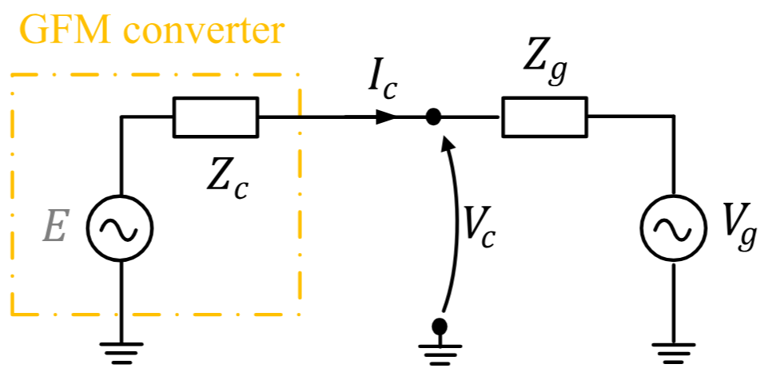
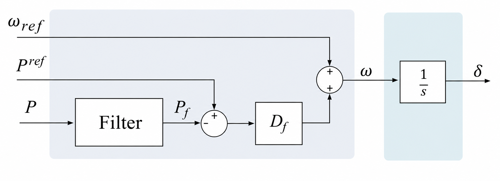
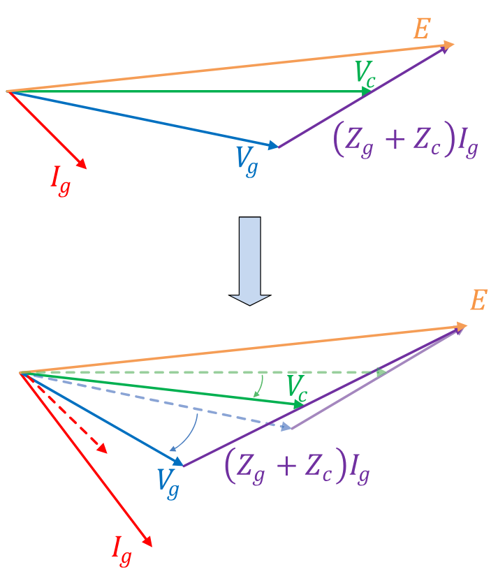

<!DOCTYPE html>
<html lang="en"><head><meta charset="UTF-8"/><meta name="viewport" content="width=device-width, initial-scale=1.0"/><title>9. Grid-forming inverters · TSCOPF.jl</title><meta name="title" content="9. Grid-forming inverters · TSCOPF.jl"/><meta property="og:title" content="9. Grid-forming inverters · TSCOPF.jl"/><meta property="twitter:title" content="9. Grid-forming inverters · TSCOPF.jl"/><meta name="description" content="Documentation for TSCOPF.jl."/><meta property="og:description" content="Documentation for TSCOPF.jl."/><meta property="twitter:description" content="Documentation for TSCOPF.jl."/><meta property="og:url" content="https://alexupm95.github.io/tscopf-economic-perspective/model/09_grid_forming/"/><meta property="twitter:url" content="https://alexupm95.github.io/tscopf-economic-perspective/model/09_grid_forming/"/><link rel="canonical" href="https://alexupm95.github.io/tscopf-economic-perspective/model/09_grid_forming/"/><script data-outdated-warner src="../../assets/warner.js"></script><link href="https://cdnjs.cloudflare.com/ajax/libs/lato-font/3.0.0/css/lato-font.min.css" rel="stylesheet" type="text/css"/><link href="https://cdnjs.cloudflare.com/ajax/libs/juliamono/0.63.2/juliamono.min.css" rel="stylesheet" type="text/css"/><link href="https://cdnjs.cloudflare.com/ajax/libs/font-awesome/6.4.2/css/fontawesome.min.css" rel="stylesheet" type="text/css"/><link href="https://cdnjs.cloudflare.com/ajax/libs/font-awesome/6.4.2/css/solid.min.css" rel="stylesheet" type="text/css"/><link href="https://cdnjs.cloudflare.com/ajax/libs/font-awesome/6.4.2/css/brands.min.css" rel="stylesheet" type="text/css"/><link href="https://cdnjs.cloudflare.com/ajax/libs/KaTeX/0.16.8/katex.min.css" rel="stylesheet" type="text/css"/><script>documenterBaseURL="../.."</script><script src="https://cdnjs.cloudflare.com/ajax/libs/require.js/2.3.6/require.min.js" data-main="../../assets/documenter.js"></script><script src="../../search_index.js"></script><script src="../../siteinfo.js"></script><script src="../../../versions.js"></script><link class="docs-theme-link" rel="stylesheet" type="text/css" href="../../assets/themes/catppuccin-mocha.css" data-theme-name="catppuccin-mocha"/><link class="docs-theme-link" rel="stylesheet" type="text/css" href="../../assets/themes/catppuccin-macchiato.css" data-theme-name="catppuccin-macchiato"/><link class="docs-theme-link" rel="stylesheet" type="text/css" href="../../assets/themes/catppuccin-frappe.css" data-theme-name="catppuccin-frappe"/><link class="docs-theme-link" rel="stylesheet" type="text/css" href="../../assets/themes/catppuccin-latte.css" data-theme-name="catppuccin-latte"/><link class="docs-theme-link" rel="stylesheet" type="text/css" href="../../assets/themes/documenter-dark.css" data-theme-name="documenter-dark" data-theme-primary-dark/><link class="docs-theme-link" rel="stylesheet" type="text/css" href="../../assets/themes/documenter-light.css" data-theme-name="documenter-light" data-theme-primary/><script src="../../assets/themeswap.js"></script><link href="../../assets/fonts.css" rel="stylesheet" type="text/css"/><link href="../../assets/custom.css" rel="stylesheet" type="text/css"/></head><body><div id="documenter"><nav class="docs-sidebar"><a class="docs-logo" href="../../"></a><div class="docs-package-name"><span class="docs-autofit"><a href="../../">TSCOPF.jl</a></span></div><button class="docs-search-query input is-rounded is-small is-clickable my-2 mx-auto py-1 px-2" id="documenter-search-query">Search docs (Ctrl + /)</button><ul class="docs-menu"><li><a class="tocitem" href="../../">Home</a></li><li><span class="tocitem">Part I — The model</span><ul><li><a class="tocitem" href="../01_why_stability/">1. Why stability constraints belong in the OPF</a></li><li><a class="tocitem" href="../02_steady_state_opf/">2. Steady-state OPF</a></li><li><a class="tocitem" href="../03_generator_models/">3. Generator models</a></li><li><a class="tocitem" href="../04_network_kron_fullbus/">4. The network: Kron vs FULL_BUS</a></li><li><a class="tocitem" href="../05_swing_dynamics/">5. Swing dynamics and discretization</a></li><li><a class="tocitem" href="../06_tsc_opf_assembled/">6. The TSC-OPF, assembled</a></li><li><a class="tocitem" href="../07_duals_economics/">7. Duals, KKT, and the economics</a></li><li><a class="tocitem" href="../08_controls_avr_governor/">8. Machine controls: AVR and turbine governor</a></li><li class="is-active"><a class="tocitem" href>9. Grid-forming inverters</a><ul class="internal"><li><a class="tocitem" href="#Fleet-membership"><span>Fleet membership</span></a></li><li><a class="tocitem" href="#Circuit-interface"><span>Circuit interface</span></a></li><li><a class="tocitem" href="#Warm-start"><span>Warm start</span></a></li><li><a class="tocitem" href="#Frequency:-droop,-not-inertia"><span>Frequency: droop, not inertia</span></a></li><li><a class="tocitem" href="#Overload-limiters"><span>Overload limiters</span></a></li><li><a class="tocitem" href="#Voltage:-Q–V-droop-plus-PI"><span>Voltage: Q–V droop plus PI</span></a></li><li><a class="tocitem" href="#Current-limiter"><span>Current limiter</span></a></li><li><a class="tocitem" href="#What-stays-synchronous-machine-only"><span>What stays synchronous-machine-only</span></a></li><li><a class="tocitem" href="#Where-this-lives-in-the-code"><span>Where this lives in the code</span></a></li></ul></li></ul></li><li><span class="tocitem">Part II — Using the code</span><ul><li><a class="tocitem" href="../../install/">Install</a></li><li><a class="tocitem" href="../../quickstart/">Quick start</a></li><li><a class="tocitem" href="../../running_a_case/">Running a case</a></li><li><a class="tocitem" href="../../parameter_reference/">Parameter reference</a></li><li><a class="tocitem" href="../../complete_example/">Complete example — every parameter</a></li><li><a class="tocitem" href="../../configuration_map/">Configuration map — structs</a></li><li><a class="tocitem" href="../../dynamic_controls_avr_governor/">Dynamic controls: AVR and turbine governor</a></li><li><a class="tocitem" href="../../developer_architecture/">Developer architecture</a></li></ul></li><li><a class="tocitem" href="../../api/">API</a></li><li><a class="tocitem" href="../../formulations/">Legacy</a></li></ul><div class="docs-version-selector field has-addons"><div class="control"><span class="docs-label button is-static is-size-7">Version</span></div><div class="docs-selector control is-expanded"><div class="select is-fullwidth is-size-7"><select id="documenter-version-selector"></select></div></div></div></nav><div class="docs-main"><header class="docs-navbar"><a class="docs-sidebar-button docs-navbar-link fa-solid fa-bars is-hidden-desktop" id="documenter-sidebar-button" href="#"></a><nav class="breadcrumb"><ul class="is-hidden-mobile"><li><a class="is-disabled">Part I — The model</a></li><li class="is-active"><a href>9. Grid-forming inverters</a></li></ul><ul class="is-hidden-tablet"><li class="is-active"><a href>9. Grid-forming inverters</a></li></ul></nav><div class="docs-right"><a class="docs-navbar-link" href="https://github.com/alexupm95/tscopf-economic-perspective" title="View the repository on GitHub"><span class="docs-icon fa-brands"></span><span class="docs-label is-hidden-touch">GitHub</span></a><a class="docs-navbar-link" href="https://github.com/alexupm95/tscopf-economic-perspective/blob/main/TSCOPF/docs/src/model/09_grid_forming.md" title="Edit source on GitHub"><span class="docs-icon fa-solid"></span></a><a class="docs-settings-button docs-navbar-link fa-solid fa-gear" id="documenter-settings-button" href="#" title="Settings"></a><a class="docs-article-toggle-button fa-solid fa-chevron-up" id="documenter-article-toggle-button" href="javascript:;" title="Collapse all docstrings"></a></div></header><article class="content" id="documenter-page"><h1 id="9.-Grid-forming-inverters"><a class="docs-heading-anchor" href="#9.-Grid-forming-inverters">9. Grid-forming inverters</a><a id="9.-Grid-forming-inverters-1"></a><a class="docs-heading-anchor-permalink" href="#9.-Grid-forming-inverters" title="Permalink"></a></h1><p>A grid-forming (GFM) converter holds a voltage phasor behind a coupling reactance and sets its own frequency from a droop law. That makes it <em>look</em> like a synchronous machine to the network — same nodal current injection, same <span>$dq$</span> interface — while its internal dynamics have nothing in common with a swing equation. There is no rotor, no <span>$H$</span>, no <span>$2H\dot{\Delta\omega} = P_m - P_e$</span>. Frequency is an <strong>algebraic</strong> function of measured power.</p><p>TSCOPF supports a mixed fleet: some units are synchronous machines with the 4th-order model of chapter 3, some are GFM converters with the model below, and they share one nodal network and one optimisation problem.</p><pre><code class="language-julia hljs">DynModelConfig(
    gen_order    = DQ_4TH,     # required
    network_form = FULL_BUS,   # required
    allow_gfm    = true,
)</code></pre><p><code>validate_dyn_config!</code> rejects <code>allow_gfm</code> outside <code>DQ_4TH</code> + <code>FULL_BUS</code>, and rejects it under TSC-DCOPF. A converter-only fleet — every active generator listed in <code>gfm_dynamic_data.csv</code> — is supported but <strong>opt-in</strong>, behind <code>DynModelConfig.allow_all_gfm</code>. The default <code>false</code> keeps the historical error from <code>resolve_sg_gfm_gens!</code>, because a case that happens to list every unit in the GFM file would otherwise silently become an all-converter run. <code>validate_all_gfm_fleet!</code> screens the rest before the warm-start solve: <code>bound_style_δ ∈ (:swing_propagated, :highest_H)</code> is rejected (both need a per-machine <span>$H$</span>, and the first also needs <span>$D$</span>), a COI-referenced corridor requires <code>gfm_in_coi = true</code> (otherwise the COI spans nothing), and <code>include_avr</code>/<code>include_governor</code> are rejected as silent no-ops since both families are built over synchronous machines only. The supported combination is <code>gfm_in_coi = true</code> with <code>bound_style_δ ∈ (:coi_box, :ref_gen, :pairwise)</code>.</p><div class="admonition is-warning" id="A-converter-only-COI-is-a-weighting,-not-inertia-3842d38fd06f7410"><header class="admonition-header">A converter-only COI is a weighting, not inertia<a class="admonition-anchor" href="#A-converter-only-COI-is-a-weighting,-not-inertia-3842d38fd06f7410" title="Permalink"></a></header><div class="admonition-body"><p>With no synchronous machine the fleet&#39;s frequency is set entirely by the droop laws. The COI is still well defined, but it is built from <span>$H^{\mathrm{eff}}_c = T_{Pf,c}/(2 m_{p,c})$</span> — a property of the frequency loop, not stored kinetic energy. <code>kinetic_energy.csv</code>, <code>potential_energy.csv</code> and <code>total_energy.csv</code> are written with a time column and nothing else on such a run, and <code>swing_debug.csv</code> is not written at all: these are machine diagnostics, and an empty file is the honest output where a column of zeros would read as a measurement.</p></div></div><table><tr><th style="text-align: right">Symbol</th><th style="text-align: right">Meaning</th><th style="text-align: right">Column</th></tr><tr><td style="text-align: right"><span>$X_{\ell,c}$</span></td><td style="text-align: right">Coupling (filter) reactance behind the terminal</td><td style="text-align: right"><code>Xl</code></td></tr><tr><td style="text-align: right"><span>$m_{p,c}$</span></td><td style="text-align: right">Active-power / frequency droop</td><td style="text-align: right"><code>mp</code></td></tr><tr><td style="text-align: right"><span>$m_{q,c}$</span></td><td style="text-align: right">Reactive-power / voltage droop</td><td style="text-align: right"><code>mq</code></td></tr><tr><td style="text-align: right"><span>$K_{pv,c}$</span>, <span>$K_{iv,c}$</span></td><td style="text-align: right">Q–V PI gains</td><td style="text-align: right"><code>Kpv</code>, <code>Kiv</code></td></tr><tr><td style="text-align: right"><span>$T^P_{f,c}$</span>, <span>$T^Q_{f,c}$</span>, <span>$T^V_{f,c}$</span></td><td style="text-align: right">Measurement-filter time constants, one per channel</td><td style="text-align: right"><code>TPf</code>, <code>TQf</code>, <code>TVf</code></td></tr><tr><td style="text-align: right"><span>$E^{\min}_c$</span>, <span>$E^{\max}_c$</span></td><td style="text-align: right">Internal-voltage clip</td><td style="text-align: right"><code>Emin</code>, <code>Emax</code></td></tr><tr><td style="text-align: right"><span>$I^{\max}_c$</span></td><td style="text-align: right">Current-limiter threshold</td><td style="text-align: right"><code>Imax</code></td></tr><tr><td style="text-align: right"><span>$P^{\min}_c$</span>, <span>$P^{\max}_c$</span></td><td style="text-align: right">Active-power device rating (overload-PI comparator)</td><td style="text-align: right"><code>Pmin</code>, <code>Pmax</code></td></tr><tr><td style="text-align: right"><span>$Q^{\min}_c$</span>, <span>$Q^{\max}_c$</span></td><td style="text-align: right">Reactive-power device rating (overload-PI comparator)</td><td style="text-align: right"><code>Qmin</code>, <code>Qmax</code></td></tr><tr><td style="text-align: right"><span>$K_{pp\max}$</span>, <span>$K_{ip\max}$</span></td><td style="text-align: right">P-overload PI gains, both branches</td><td style="text-align: right"><code>Kppmax</code>, <code>Kipmax</code></td></tr><tr><td style="text-align: right"><span>$K_{pq\max}$</span>, <span>$K_{iq\max}$</span></td><td style="text-align: right">Q-overload PI gains, both branches</td><td style="text-align: right"><code>Kpqmax</code>, <code>Kiqmax</code></td></tr><tr><td style="text-align: right"><span>$E_{\mathrm{int},c}$</span></td><td style="text-align: right">PI integrator state (clipped)</td><td style="text-align: right">state</td></tr><tr><td style="text-align: right"><span>$E_{\mathrm{droop},c}$</span></td><td style="text-align: right">PI output = internal voltage magnitude (clipped)</td><td style="text-align: right">state</td></tr><tr><td style="text-align: right"><span>$P^{\mathrm{meas}}_c, Q^{\mathrm{meas}}_c, V^{\mathrm{meas}}_c$</span></td><td style="text-align: right">Filtered measurements</td><td style="text-align: right">states</td></tr></table><div class="admonition is-info" id="Where-this-control-structure-comes-from-a42c0c185bbcb5ea"><header class="admonition-header">Where this control structure comes from<a class="admonition-anchor" href="#Where-this-control-structure-comes-from-a42c0c185bbcb5ea" title="Permalink"></a></header><div class="admonition-body"><p>Models 9.2–9.4 implement the droop controller of W. Du, A. Singhal, F. K. Tuffner and K. P. Schneider, <em>Comparison of Electromagnetic Transient and Phasor-based Simulation for the Stability of Grid-Forming-Inverter-based Microgrids</em>, 2021 IEEE Power &amp; Energy Society Innovative Smart Grid Technologies Conference (ISGT), DOI <code>10.1109/ISGT49243.2021.9372242</code>. Their Fig. 2(a) is the Q–V loop of Model 9.4, their Fig. 2(b) is the P–f loop of Model 9.3, their measurement low-pass <span>$T$</span> in (2)–(4) is the filter constant of Model 9.2, and the <code>Kppmax</code> / <code>Kipmax</code> columns are named after the <span>$k_{ppmax}$</span> / <span>$k_{ipmax}$</span> gains of that same figure.</p><p>The bundled <code>9bus_gfm</code> parameters are the paper&#39;s Table I: <code>Kiv = 5.86</code>, <code>mq = 0.05</code>, <code>Kpv = 0</code> (absent from their table), <code>TPf = TQf = TVf = 0.01</code> s, and <code>mp = 0.01</code>, which is their 3.77 rad/s divided by <span>$\omega_s = 376.99$</span> rad/s.</p><p>Two deliberate departures from the figure. The paper carries <span>$m_p$</span> in rad/s per p.u. and integrates the frequency deviation directly (<span>$\dot{\delta} = \omega$</span>), while TSCOPF carries it dimensionless and puts <span>$\omega_s$</span> in the angle row <span>$\eqref{eq:gfm-angle-9}$</span> — the same loop under a different normalisation, so the two gain values are not comparable without that factor. And the paper has <strong>no</strong> current limiter: its converter is an unlimited voltage source behind <span>$X_\ell$</span>. Model 9.5 does not come from this paper.</p><p><strong>The standardised form.</strong> That controller was subsequently adopted by WECC/PNNL as the generic grid-forming model <strong>REGFM_A1</strong> (<em>Model Specification of Droop-Controlled, Grid-Forming Inverters</em>, PNNL-32278, V6, September 2023). Its Fig. 3 is the same P–f and Q–V pair, its Fig. 4 and eq. (7) are Model 9.5 verbatim — exact saturation at <span>$I^{\max}$</span> with the current angle preserved — and its Table 1 is where the <code>TPf</code> / <code>TQf</code> / <code>TVf</code> column names and the three independent measurement lags of eq. (4)–(6) come from. Fig. 3 also carries one-sided PI branches on <span>$P^{\max}/P^{\min}$</span> and on <span>$Q^{\max}/Q^{\min}$</span>. Those are Model 9.3a, behind <code>DynModelConfig.gfm_pq_overload</code> (default <code>false</code>). With the knob off, converter output during a disturbance is bounded only by Model 9.5 and the <span>$E^{\min}/E^{\max}$</span> clip. On the REGFM<em>A1 reference parameters those permit roughly <span>$2.2\times$</span> <span>$P^{\max}$</span> and <span>$2.6\times$</span> <span>$Q^{\max}$</span> respectively; a fault current rating (I^{\max}</em>F$, 1.5–3 pu) is deliberately not a continuous power rating.</p></div></div><hr/><h2 id="Fleet-membership"><a class="docs-heading-anchor" href="#Fleet-membership">Fleet membership</a><a id="Fleet-membership-1"></a><a class="docs-heading-anchor-permalink" href="#Fleet-membership" title="Permalink"></a></h2><p>GFM units are <strong>not</strong> flagged inside the SG file. They live in a separate CSV named by <code>TransientConfig.gfm_dynamic_filename</code> (default <code>gfm_dynamic_data.csv</code>), read into <code>SystemData.DGFM</code>, and membership is decided by an <code>id</code> partition: a generator id appearing in <code>DGFM</code> is a converter, everything else in <code>active_gen</code> is a synchronous machine (<code>sg_active_gens</code> / <code>gfm_active_gens</code>). The two sets are recomputed per disturbance window by <code>resolve_sg_gfm_gens!</code> and cached in <code>dyn_model_dict[:meta][:sg_gens]</code> / <code>[:gfm_gens]</code>.</p><p>The practical consequence for anyone post-processing results: <strong>any loop keyed on machine inertia <code>H</code> must skip GFM ids</strong>, because those rows simply do not exist in <code>DGEN_DYN</code>. Membership is available from <code>dyn_model_dict[:meta][:gfm_ids]</code>.</p><h3 id="Per-unit-bases"><a class="docs-heading-anchor" href="#Per-unit-bases">Per-unit bases</a><a id="Per-unit-bases-1"></a><a class="docs-heading-anchor-permalink" href="#Per-unit-bases" title="Permalink"></a></h3><p><code>gfm_dynamic_data.csv</code> is written on each converter&#39;s <strong>own</strong> MVA base, given by the <code>InvBase</code> column (accepted aliases <code>mach_base_MVA</code>, <code>inv_base</code>; a zero entry falls back to the system base). <code>apply_gfm_base_conversion!</code> rescales the whole table to system base at read time, with <span>$\beta_c = S^{\mathrm{sys}}_{\mathrm{base}} / S^{\mathrm{mach}}_{\mathrm{base},c}$</span>:</p><p class="math-container">\[\begin{align*}
X_\ell &amp;\leftarrow \beta X_\ell, &amp;
m_q &amp;\leftarrow \beta m_q, &amp;
m_p &amp;\leftarrow \beta m_p, \\
K_{pp\max} &amp;\leftarrow \beta K_{pp\max}, &amp;
K_{ip\max} &amp;\leftarrow \beta K_{ip\max}, &amp;
K_{pq\max} &amp;\leftarrow \beta K_{pq\max}, &amp;
K_{iq\max} &amp;\leftarrow \beta K_{iq\max}, \\
P^{\max} &amp;\leftarrow P^{\max}/\beta, &amp;
P^{\min} &amp;\leftarrow P^{\min}/\beta, &amp;
Q^{\max} &amp;\leftarrow Q^{\max}/\beta, &amp;
Q^{\min} &amp;\leftarrow Q^{\min}/\beta, &amp;
I^{\max} &amp;\leftarrow I^{\max}/\beta .
\end{align*}\]</p><p>Impedances and the gains that map a power error into a per-unit command scale up with <span>$\beta$</span>; power and current ratings scale down. <span>$K_{pp\max}$</span> and <span>$K_{ip\max}$</span> scale like <span>$m_p$</span> (power error to per-unit <span>$\Delta\omega$</span>). <span>$K_{pq\max}$</span> and <span>$K_{iq\max}$</span> scale like <span>$m_q$</span> (power error to a voltage command). <span>$\omega_s$</span> stays only on the angle row. Everything downstream of the reader, including every equation on this page, is already on system base. In the bundled <code>9bus_gfm</code> case <code>InvBase = 100</code> equals the system base, so <span>$\beta = 1$</span> and the conversion is a no-op; it matters as soon as converters of different sizes are mixed.</p><p><code>Qmax</code>, <code>Qmin</code>, <code>Kpqmax</code>, <code>Kiqmax</code>, <code>Kppmax</code> and <code>Kipmax</code> are required columns. A file that omits any of them fails at parse, whether or not <code>gfm_pq_overload</code> is on. There is no <code>+Inf</code> default and no &quot;column absent means the limiter is off&quot;. Archived <code>RESULTS/*/Inputs/</code> copies and external case folders have to gain the columns before they will load; see <code>TODO.md</code>.</p><hr/><h2 id="Circuit-interface"><a class="docs-heading-anchor" href="#Circuit-interface">Circuit interface</a><a id="Circuit-interface-1"></a><a class="docs-heading-anchor-permalink" href="#Circuit-interface" title="Permalink"></a></h2><p></p><p><em>The converter is modelled as an internal source <span>$E$</span> behind a purely inductive coupling <span>$Z_c = jX_{\ell,c}$</span> (<code>Xl</code>), delivering <span>$I_c$</span> into the network bus voltage <span>$V_c$</span>. TSCOPF has no separate <span>$Z_g$</span>: the network side is the full nodal <span>$Y_{\mathrm{bus}}$</span>, and <span>$V_c$</span> is the FULL_BUS bus-voltage variable that the converter shares with every other element at that bus. There is no resistance in the coupling — unlike the SG stator, which carries <code>Ra</code>.</em></p><p>The converter&#39;s internal phasor is placed on the <span>$q$</span> axis of its own rotating frame, so in the <span>$dq$</span> variables shared with the synchronous machines <span>$E_{d,c} = 0$</span> and <span>$E_{q,c} = E_{\mathrm{int},c}$</span>. With the terminal projections <span>$V_{d} = V_{k}\sin(\delta_c - \theta_k)$</span> and <span>$V_{q} = V_{k}\cos(\delta_c - \theta_k)$</span> (same convention as chapter 3, figure <code>parktransformx</code>), the coupling gives:</p><div class="admonition is-info" id="Model-9.1-(GFM-coupling-and-injection)-2ac0b4f48d9c433a"><header class="admonition-header">Model 9.1 (GFM coupling and injection)<a class="admonition-anchor" href="#Model-9.1-(GFM-coupling-and-injection)-2ac0b4f48d9c433a" title="Permalink"></a></header><div class="admonition-body"><p class="math-container">\[\begin{align}
\label{eq:gfm-coupling-9}
V_{d,c} - E_{d,c} - X_{\ell,c} I_{q,c} &amp;= 0 , &amp;
V_{q,c} - E_{q,c} + X_{\ell,c} I_{d,c} &amp;= 0 , \\[4pt]
\label{eq:gfm-injection-9}
P_{e,c} &amp;= V_{d,c} I_{d,c} + V_{q,c} I_{q,c} , &amp;
Q_{e,c} &amp;= V_{q,c} I_{d,c} - V_{d,c} I_{q,c} .
\end{align}\]</p><p class="math-container">\[\eqref{eq:gfm-injection-9}\]</p><p>is the <em>same</em> terminal map used for synchronous machines, which is exactly why a mixed fleet needs no special-casing in the KCL: <code>Id</code>/<code>Iq</code> from a converter and from a machine enter the nodal balance identically. The pre-fault forms are stamped by <code>Attach_GFM_init!</code> into the same <code>eq_const_Ed_init</code> / <code>eq_const_Vd_init</code> / <code>eq_const_P_init</code> families as the SG rows, keyed by generator id.</p></div></div><p>Solving <span>$\eqref{eq:gfm-coupling-9}$</span> for the currents gives <span>$X_\ell I_d = E_q - V_q$</span> and <span>$X_\ell I_q = V_d$</span>, which is the pair the current limiter below scales.</p><h2 id="Warm-start"><a class="docs-heading-anchor" href="#Warm-start">Warm start</a><a id="Warm-start-1"></a><a class="docs-heading-anchor-permalink" href="#Warm-start" title="Permalink"></a></h2><p><code>gfm_machine_warmstart</code> maps the ACOPF solution at the converter bus to an initial internal phasor by the textbook construction <span>$V_{\mathrm{int}} = V_c + jX_\ell I_c$</span> with <span>$I_c = (P_g - jQ_g)/\bar{V_c}$</span>, then reads off <span>$\delta_c = \angle V_{\mathrm{int}}$</span>, <span>$E_c = |V_{\mathrm{int}}|$</span>, and projects the current onto the resulting frame. As with every FULL_BUS path this only sets <code>start=</code> values; the equalities above are what actually pin the operating point.</p><hr/><h2 id="Frequency:-droop,-not-inertia"><a class="docs-heading-anchor" href="#Frequency:-droop,-not-inertia">Frequency: droop, not inertia</a><a id="Frequency:-droop,-not-inertia-1"></a><a class="docs-heading-anchor-permalink" href="#Frequency:-droop,-not-inertia" title="Permalink"></a></h2><p></p><p><em>Droop block. The measurement filter is the first-order lag on <span>$P$</span> (<code>TPf</code>); <span>$D_f$</span> is the droop gain <code>mp</code>; <span>$\omega_{\mathrm{ref}}$</span> is synchronous speed, so the block&#39;s output <span>$\omega$</span> becomes the deviation <span>$\Delta\omega_c$</span> in TSCOPF&#39;s variables; and the <span>$1/s$</span> integrator is the angle update. Note what the diagram makes visible: the path from power error to frequency contains <strong>no</strong> integrator — frequency responds algebraically. All of the converter&#39;s &quot;inertia&quot; is the filter lag <span>$T^P_{f,c}$</span>.</em></p><div class="admonition is-info" id="Model-9.2-(measurement-filters)-f1600f8c4bd680a5"><header class="admonition-header">Model 9.2 (measurement filters)<a class="admonition-anchor" href="#Model-9.2-(measurement-filters)-f1600f8c4bd680a5" title="Permalink"></a></header><div class="admonition-body"><p>Both discretisations of <span>$T^\chi_{f,c}\,\dot{x} = u - x$</span> are available, selected per step by <code>gfm_integrator</code> (see below):</p><p class="math-container">\[\begin{align}
\label{eq:gfm-filter-9}
x^t_c &amp;= \frac{T^\chi_{f,c}}{T^\chi_{f,c} + \Delta t}\,x^{t-1}_c + \frac{\Delta t}{T^\chi_{f,c} + \Delta t}\,u^t_c
  &amp;&amp;\text{(backward Euler)} , \\[4pt]
\label{eq:gfm-filter-trap-9}
x^t_c\,(1 + c) &amp;- x^{t-1}_c\,(1 - c) - c\left(u^t_c + u^{t-1}_c\right) = 0 ,
  \quad c = \frac{\Delta t}{2\,T^\chi_{f,c}}
  &amp;&amp;\text{(trapezoidal)} ,
\end{align}\]</p><p>with <span>$x \in \{P^{\mathrm{meas}}, Q^{\mathrm{meas}}, V^{\mathrm{meas}}\}$</span> and <span>$\chi \in \{P, Q, V\}$</span> selecting that channel&#39;s own constant. Inputs are <span>$P_{e,c}$</span>, <span>$Q_{e,c}$</span>, and the bus magnitude <span>$V_k$</span>. The three constants are independent, exactly as in REGFM<em>A1 eq. (4)–(6), each with its own <code>TPf</code> / <code>TQf</code> / <code>TVf</code> column and its own 0.01–0.1 s range; a case that sets them equal simply recovers the shared-lag behaviour. `</em>add<em>gfm</em>measurement<em>filter!` degenerates to a pass-through equality <span>$x = u$</span> when T^\chi</em>{f,c} \le 10^{-9}$ on either branch, so a zero in the CSV means <em>unfiltered</em>, not <em>division by zero</em>.</p><p>A legacy <code>Tf</code> column is still accepted in place of the three and is broadcast into all of them, so case folders and archived <code>RESULTS/*/Inputs/</code> copies written before the split keep loading unchanged.</p><p>At <span>$t = 1$</span> the trapezoidal branch needs <span>$u^0_c$</span>. In the fault window the init equalities <code>eq_const_gfm_{Pmeas,Qmeas,Vmeas}_init</code> pin <span>$x^0_c = u^0_c$</span>, so the correction term vanishes identically; in the post-fault window <span>$u^0_c$</span> is the last fault-window <span>$P_{e,c}$</span> / <span>$Q_{e,c}$</span> / <span>$V_k$</span>, which is genuinely distinct from the state anchor.</p></div></div><div class="admonition is-warning" id="Which-scheme,-and-when-it-matters-849c7870d4c498"><header class="admonition-header">Which scheme, and when it matters<a class="admonition-anchor" href="#Which-scheme,-and-when-it-matters-849c7870d4c498" title="Permalink"></a></header><div class="admonition-body"><p><code>DynModelConfig.gfm_integrator</code> governs the three filters <strong>and</strong> the Q–V PI integrator <span>$\eqref{eq:gfm-pi-int-9}$</span> — nothing else. GFM <span>$\delta$</span> and every synchronous-machine family keep following <code>ode_first_step</code>.</p><table><tr><th style="text-align: right">value</th><th style="text-align: right">filters and Q–V PI</th></tr><tr><td style="text-align: right"><code>:backward_euler</code> (<strong>default</strong>)</td><td style="text-align: right">BE at every step</td></tr><tr><td style="text-align: right"><code>:follow_ode_first_step</code></td><td style="text-align: right">BE at <span>$t=1$</span> of each window iff <code>ode_first_step = :backward_euler</code>, trapezoidal otherwise and always for <span>$t \ge 2$</span></td></tr><tr><td style="text-align: right"><code>:trapezoidal</code></td><td style="text-align: right">trapezoidal at every step</td></tr></table><p>Backward Euler is L-stable and damps monotonically at any <span>$\Delta t / T^\chi_{f,c}$</span>. Trapezoidal is second-order accurate but only A-stable: its per-step factor <span>$(1-c)/(1+c)$</span> turns negative once <span>$\Delta t &gt; 2\,T^\chi_{f,c}$</span>, and the filtered signal then rings step-to-step into the droop → <span>$\delta$</span> → limiter chain. The criterion is per filter, so the builder tests the <em>smallest</em> of the three constants across all converters and warns when a run crosses that line.</p><p><strong>Why BE is the default despite being first-order.</strong> The trapezoidal row carries <span>$u^{t-1}_c$</span> — that is <span>$P_{e,c}$</span> / <span>$Q_{e,c}$</span>, nonlinear in <span>$(V, \theta, \delta, I_d, I_q)$</span> — into every filter equation, and the Jacobian/Hessian fill-in this creates compounds with horizon length. On <code>9bus_gfm</code> with a 150 ms bus fault at <span>$\Delta t = 0.01$</span> s, <code>:backward_euler</code> solved a 3 s horizon in 205 iterations / 40.6 s of Ipopt time, while <code>:follow_ode_first_step</code> took 161 iterations / 2826 s — fewer iterations, ~70× the wall time, and a per-iteration cost that grew from 0.074 s at 60 steps to 17.6 s at 300 steps. The accuracy given up is small (worst rotor-angle gap 2.5° absolute, 1.8° relative to COI, ≈2 % of swing; objective 1.6e-5 relative), so the trapezoidal variants are positioned as opt-in for accuracy studies on short horizons rather than as the everyday setting.</p><p>One consequence worth stating for the PI: <span>$E^{\mathrm{int}}$</span> integrates against the <strong>clipped</strong> previous state (the anti-windup convention). Under the trapezoidal branch half a step of the error at <span>$t-1$</span> is integrated even where the clip already discarded it at <span>$t-1$</span> — defensible, but not identical to a BE anti-windup.</p></div></div><div class="admonition is-info" id="Model-9.3-(P–f-droop-and-angle)-c30d72904a650ca8"><header class="admonition-header">Model 9.3 (P–f droop and angle)<a class="admonition-anchor" href="#Model-9.3-(P–f-droop-and-angle)-c30d72904a650ca8" title="Permalink"></a></header><div class="admonition-body"><p class="math-container">\[\begin{align}
\label{eq:gfm-droop-9}
\Delta\omega^t_c &amp;= m_{p,c}\left(P^{\mathrm{set}}_c - P^{\mathrm{meas},t}_c\right) + u^{t}_{P\max,c} + u^{t}_{P\min,c} , \\[4pt]
\label{eq:gfm-angle-9}
\delta^t_c - \delta^{t-1}_c &amp;= \frac{\Delta t}{2}\,\omega_s\left(\Delta\omega^t_c + \Delta\omega^{t-1}_c\right)
  \quad (t &gt; 1), \qquad
\delta^1_c - \delta^0_c = \Delta t\,\omega_s\,\Delta\omega^1_c .
\end{align}\]</p><p class="math-container">\[\eqref{eq:gfm-droop-9}\]</p><p>replaces the swing equation entirely. <span>$P^{\mathrm{set}}_c$</span> is the converter&#39;s active-power set-point — stored in the shared <code>:P_m</code> container so that <code>mechanical_power_for_swing</code> and the export layer see one variable family across the fleet — and pinned to the dispatch by <span>$P^{\mathrm{set}}_c = P_{g,c}$</span>. The dispatch box is the <code>DGEN</code> range <code>pg_min</code>/<code>pg_max</code>. <code>DGFM.Pmin</code>/<code>Pmax</code> are the device ratings that feed Model 9.3a; they do not box <span>$P^{\mathrm{set}}_c$</span>. With <code>gfm_pq_overload = false</code> both <span>$u_P$</span> terms are absent and the row is the affine droop above without them.</p><p>The angle update is trapezoidal from <span>$t=2$</span>, and its <span>$t=1$</span> row follows <code>ode_first_step</code> — the same dial as the SG swing, EMF, AVR and governor. Under <code>:backward_euler</code> the first row is <span>$\delta^1 - \delta^0 = \Delta t\,\omega_s\,\Delta\omega^1$</span>; under the default <code>:trapezoidal</code> it is <span>$\delta^1 - \delta^0 = \tfrac{\Delta t}{2}\omega_s(\Delta\omega^1 + \Delta\omega^0)$</span>, where <span>$\Delta\omega^0$</span> is the droop law one step back — identically zero entering the fault window (with the overload knob on, every <span>$u_P$</span> is zero there too, because <span>$x(0) = 0$</span> inside the band), and equal to the last fault-on <span>$\Delta\omega$</span> entering the post-fault window. With <code>gfm_pq_overload = true</code> that post-fault anchor includes the last fault-window <span>$u_P$</span> values, so the first trapezoidal step does not drop the overload correction.</p><p>Until 2026-08-03 this row was backward Euler unconditionally, so a mixed fleet integrated the machines trapezoidally and the converters by Euler in the same step. If you are comparing against results from before that change, that one row is where a small first-step offset comes from.</p></div></div><p>Because <span>$\eqref{eq:gfm-droop-9}$</span> is algebraic, a converter contributes <strong>no</strong> inertial term to the system response. Its <span>$\Delta\omega_c$</span> still exists as a variable and still enters the angle integration, but it is slaved to the filtered power error.</p><div class="admonition is-warning" id="Phasor-validity:-keep-mp-at-or-below-0.05-54d7d53af606b543"><header class="admonition-header">Phasor validity: keep `mp` at or below 0.05<a class="admonition-anchor" href="#Phasor-validity:-keep-mp-at-or-below-0.05-54d7d53af606b543" title="Permalink"></a></header><div class="admonition-body"><p>The source paper&#39;s headline result is a limit on <em>this</em> formulation, not a side note. Du et al. compare EMT against traditional phasor-based simulation on a two-inverter microgrid and on a modified IEEE 34-node feeder, and the two agree only while the P–f droop gain stays in the normal range. At <code>mp = 0.01</code> (1 %) the phasor and EMT trajectories overlap. At 5 % the phasor response is already visibly more damped. At 10–12 % EMT predicts an unstable system while phasor-based simulation still calls it stable. The cause is exactly what TSCOPF also drops: network and inverter-filter dynamics.</p><p>TSCOPF is a phasor formulation — algebraic <span>$Y_{\mathrm{bus}}$</span>, no line dynamics, no LC filter — so a mixed-fleet result is only as trustworthy as that band. The bundled cases ship <code>mp = 0.01</code>, which sits at the paper&#39;s Case A where the two methods agree. A sweep that pushes <code>mp</code> past roughly 0.05 leaves the validated region, and a TSC-OPF solution that looks feasible there may be one an EMT study would reject. An over-optimistic stability verdict is precisely the failure mode a stability-constrained dispatch cannot afford, so treat <code>mp &gt; 0.05</code> as EMT-verification territory rather than as a result.</p></div></div><h2 id="Overload-limiters"><a class="docs-heading-anchor" href="#Overload-limiters">Overload limiters</a><a id="Overload-limiters-1"></a><a class="docs-heading-anchor-permalink" href="#Overload-limiters" title="Permalink"></a></h2><p><code>DynModelConfig.gfm_pq_overload</code> (default <code>false</code>) stamps both Fig. 3 branch pairs. Off, the droop row and the voltage error stay exactly the affine loops above, and the model grows by nothing. On, each converter-step adds eight variables and eight equalities: a raw state and a clipped state for <span>$P^{\max}$</span>, <span>$P^{\min}$</span>, <span>$Q^{\max}$</span> and <span>$Q^{\min}$</span>. The radial current limiter is unchanged either way. <span>$E_{\mathrm{droop}}$</span> and <span>$\delta$</span> still drive it, so the converter stays a voltage source behind <span>$X_\ell$</span>. These PIs only add corrections at the two summing junctions already in the loops.</p><p><code>DGFM</code> ratings are the comparator inputs. <code>DGEN</code> ratings are the dispatch box. The converter may transiently exceed the device band and be pulled back. <code>validate_gfm_dispatch_band!</code> requires each converter&#39;s <code>DGEN</code> P and Q interval to sit inside the <code>DGFM</code> band, on system base, whether or not the knob is on: <span>$x(0) = 0$</span> is an equilibrium only inside the band. The check does not add <span>$Q^{\min} \le Q_g \le Q^{\max}$</span> to the ACOPF. On <code>9bus_gfm</code> the converter reactive limits in <code>generators_data.csv</code> are <span>$\pm 44$</span> MVAr so the inclusion holds against Table 1&#39;s <span>$\pm 0.44$</span> pu; machine rows stay at <span>$\pm 300$</span>. That nameplate is much tighter than the machine Q boxes. Ipopt&#39;s default barrier parameter then cycles in restoration when the converter is inside the COI and the <span>$\Delta\omega$</span> corridor is on, even though the optimum is interior. That combination uses <code>mu_init = 10^{-3}</code> unless <code>IpoptSolverConfig.mu_init</code> says otherwise.</p><div class="admonition is-info" id="Model-9.3a-(P-and-Q-overload-PIs)-43424ab6b901d600"><header class="admonition-header">Model 9.3a (P and Q overload PIs)<a class="admonition-anchor" href="#Model-9.3a-(P-and-Q-overload-PIs)-43424ab6b901d600" title="Permalink"></a></header><div class="admonition-body"><p>Same gains on the upper and lower branch of each axis. <span>$u$</span> is an expression inside the droop equality and the voltage error. The raw and clipped states are both variables. The <span>$0$</span> clamps sit on the integrator state and on the branch output, not on the error.</p><p class="math-container">\[\begin{align*}
e_{P\max} &amp;= P^{\max} - P^{\mathrm{meas}}, &amp;
e_{P\min} &amp;= P^{\min} - P^{\mathrm{meas}}, \\
x^{\mathrm{raw}}_{P\max} - x^{\mathrm{clip}}_{P\max,\mathrm{prev}} &amp;= \Delta t\, K_{ip\max}\, e_{P\max}, &amp;
x^{\mathrm{raw}}_{P\min} - x^{\mathrm{clip}}_{P\min,\mathrm{prev}} &amp;= \Delta t\, K_{ip\max}\, e_{P\min}, \\
x_{P\max} &amp;= \mathrm{smooth\_min}(x^{\mathrm{raw}}_{P\max},\, 0), &amp;
x_{P\min} &amp;= \mathrm{smooth\_max}(x^{\mathrm{raw}}_{P\min},\, 0), \\
u_{P\max} &amp;= \mathrm{smooth\_min}(K_{pp\max}\, e_{P\max} + x_{P\max},\, 0), &amp;
u_{P\min} &amp;= \mathrm{smooth\_max}(K_{pp\max}\, e_{P\min} + x_{P\min},\, 0),
\end{align*}\]</p><p>and the same four rows on <span>$Q$</span> with <span>$K_{pq\max}$</span>, <span>$K_{iq\max}$</span>, <span>$Q^{\mathrm{meas}}$</span> and <span>$Q^{\max}/Q^{\min}$</span>. The integrator follows <code>gfm_integrator</code>: backward Euler is the row above, trapezoidal replaces the right-hand side with <span>$(\Delta t/2)\,k_i\,(e^t + e^{t-1})$</span>, the same split as the Q–V PI. The previous state is the <em>clipped</em> value. Integrating the raw error and clipping only the output has no finite equilibrium — inside the band the upper error is strictly positive and the state runs to <span>$+\infty$</span>. Deadbanding the error would freeze the integrator at a nonzero value once the power returns inside the band, which leaves a permanent <span>$\Delta\omega$</span> or voltage-command offset. Integrating from the clipped state unwinds by itself, and it is the convention <span>$E_{\mathrm{int}}$</span> already uses. There is no tracking time constant.</p><p>Inside the band the upper error is positive and the clipped state is held at <span>$0$</span>, so the branch output is <span>$0$</span>. Outside, the proportional term acts immediately and the integrator winds in the corrective direction. On the way back the positive error walks the state up to the rail and the clip holds it. Init is <span>$x(0) = 0$</span> on all four branches. The fault-window anchors stay the expressions they are with the knob off. The post-fault trapezoidal <span>$t = 1$</span> anchors from the last fault-window clipped states and includes those <span>$u$</span> values.</p><p>The clip smoothing is set per axis and per converter from the integrator step: <span>$\varepsilon = c\,\Delta t\,K_i^{\mathrm{mach}}$</span> with <span>$c$</span> = <code>_GFM_PQLIM_EPS_STEP_FRAC</code> <span>$= 0.01$</span>, floored at <span>$10^{-6}$</span>, where <span>$K_i^{\mathrm{mach}}$</span> is <code>Kipmax</code> or <code>Kiqmax</code> on the converter&#39;s own base. Both the in-band bias of the smoothed clip (<span>$\approx \varepsilon^2/4s$</span>, with <span>$s$</span> one integrator step) and its Jacobian in the raw state (<span>$\approx \varepsilon^2/4s^2$</span>) scale as <span>$\varepsilon^2/s$</span>, so tying <span>$\varepsilon$</span> to <span>$s$</span> makes both independent of <span>$\Delta t$</span> and the gains. Near the rail the error is small and the bias grows as <span>$1/|e|$</span>. <span>$c$</span> is chosen so that this false state stays below the proportional term <span>$K_p|e|$</span>. At <span>$c = 0.2$</span> a converter with <span>$Q_{\min} = -5$</span> MVAr settled 4.4 MVAr inside its rail. At <span>$c = 0.01$</span> it settles at <span>$-4.95$</span> MVAr, with no extra Ipopt iterations. A fixed <span>$\varepsilon$</span> cannot do this: with REGFM<em>A1 gains K</em>{iq}$ is about <span>$200\times$</span> <span>$K_{ip}$</span>, and a fixed <span>$\varepsilon = 10^{-2}$</span> gave the P-axis clip an in-band bias of about 0.1 pu <span>$\Delta\omega$</span>, enough to ramp an all-GFM fleet&#39;s frequency. The branch output <span>$u = $ smooth-max$</span>(K<em>p e + x, 0)$ carries nothing to the next step, so it gets its own, tighter width: \varepsilon</em>{\mathrm{out}} = K<em>p^{\mathrm{mach}}\,tol$ with tol = `</em>GFM<em>PQLIM</em>OUT<em>ERR</em>TOL<code>$= 10^{-3}$ pu of the converter rating. That confines the soft corner to about 0.3 MVAr on a 300 MVA unit; with the state-clip $\varepsilon$ at $c = 0.2$ reused there, the Q axis acted about 2 MVAr early. The resolved values are written to</code>run<em>manifest.toml<code>as</code>[resolved] gfm</em>pq<em>eps</em>P<code>/</code>gfm<em>pq</em>eps<em>Q<code>/</code>gfm</em>pq<em>eps</em>out<em>P<code>/</code>gfm</em>pq<em>eps</em>out<em>Q<code>. Boxes on all four raw states are mandatory (</code>gfm</em>pq<em>raw</em>span<em>pu<code>, default 20 pu, symmetric). Clipped states get</code>gfm</em>pq<em>clip</em>slack<em>pu<code>(default 0.05) of room past $0$: the upper clip lives in $[-\mathrm{span},\, +\mathrm{slack}]$ and the lower clip in $[-\mathrm{slack},\, +\mathrm{span}]$.</code>TsBuilderConfig<code>switches them with</code>bound</em>gfm<em>pq</em>raw<em>{tf,tpf}<code>and</code>bound</em>gfm<em>pq</em>clip_{tf,tpf}`, default on.</p><p>One converter, <span>$\Delta t = 0.01$</span> s, 150 ms fault and 3 s post-fault: <span>$\Delta n = 8 \cdot 315 = 2520$</span> variables and the same number of equalities. The four integrator rows stay affine. The four state clips are nonconvex (one square root each), and four further square roots in the <span>$u$</span>&#39;s make the droop equality nonconvex in <span>$(P^{\mathrm{meas}}, x_{P\max}, x_{P\min})$</span> and the <span>$E_{\mathrm{int}}$</span> raw row nonconvex in <span>$(Q^{\mathrm{meas}}, x_{Q\max}, x_{Q\min})$</span>. Both of those rows are affine with the knob off.</p></div></div><h2 id="Voltage:-Q–V-droop-plus-PI"><a class="docs-heading-anchor" href="#Voltage:-Q–V-droop-plus-PI">Voltage: Q–V droop plus PI</a><a id="Voltage:-Q–V-droop-plus-PI-1"></a><a class="docs-heading-anchor-permalink" href="#Voltage:-Q–V-droop-plus-PI" title="Permalink"></a></h2><p>The reactive channel is a droop reference feeding a PI regulator whose output is the internal voltage magnitude. Define the voltage error</p><p class="math-container">\[\varepsilon^t_c = V^{\mathrm{set}}_c - m_{q,c} Q^{\mathrm{meas},t}_c + u^{t}_{Q\max,c} + u^{t}_{Q\min,c} - V^{\mathrm{meas},t}_c .\]</p><p>With <code>gfm_pq_overload = false</code> both <span>$u_Q$</span> terms are absent and the error is the affine expression <span>$V^{\mathrm{set}}_c - m_{q,c} Q^{\mathrm{meas},t}_c - V^{\mathrm{meas},t}_c$</span>.</p><p class="math-container">\[V^{\mathrm{set}}_c\]</p><p>is a decision variable pinned pre-fault by <span>$V^{\mathrm{set}}_c = V_k + m_{q,c} Q_{g,c}$</span>, so that <span>$\varepsilon_c = 0$</span> at the initial operating point by construction.</p><div class="admonition is-info" id="Model-9.4-(Q–V-PI-with-anti-windup-clip)-1c8eb0e636e91143"><header class="admonition-header">Model 9.4 (Q–V PI with anti-windup clip)<a class="admonition-anchor" href="#Model-9.4-(Q–V-PI-with-anti-windup-clip)-1c8eb0e636e91143" title="Permalink"></a></header><div class="admonition-body"><p class="math-container">\[\begin{align}
\label{eq:gfm-pi-int-9}
\tilde{E}^{\,t}_{\mathrm{int},c} - E^{t-1}_{\mathrm{int},c} &amp;= \Delta t\,K_{iv,c}\,\varepsilon^t_c , &amp;
E^t_{\mathrm{int},c} &amp;= \mathrm{clip}\bigl(\tilde{E}^{\,t}_{\mathrm{int},c};\, E^{\min}_c, E^{\max}_c\bigr) , \\[4pt]
\label{eq:gfm-pi-out-9}
\tilde{E}^{\,t}_{\mathrm{droop},c} &amp;= E^t_{\mathrm{int},c} + K_{pv,c}\,\varepsilon^t_c , &amp;
E^t_{\mathrm{droop},c} &amp;= \mathrm{clip}\bigl(\tilde{E}^{\,t}_{\mathrm{droop},c};\, E^{\min}_c, E^{\max}_c\bigr) .
\end{align}\]</p><p>The integrator follows <code>gfm_integrator</code>, not <code>ode_first_step</code> — the same dial as the measurement filters above. The backward-Euler row is <span>$\tilde{E}^{\,t}_{\mathrm{int}} - E^{t-1}_{\mathrm{int}} = \Delta t\,K_{iv}\varepsilon^t$</span>; the trapezoidal row is <span>$\tilde{E}^{\,t}_{\mathrm{int}} - E^{t-1}_{\mathrm{int}} = \tfrac{\Delta t}{2}K_{iv}(\varepsilon^t + \varepsilon^{t-1})$</span>, with <span>$\varepsilon^0$</span> the pre-window voltage error (zero entering the fault window by the <span>$V^{\mathrm{set}}$</span> equilibrium, the last fault-on error entering the post-fault window). Its previous-step anchor is the <strong>clipped</strong> state <span>$E^{t-1}_{\mathrm{int}}$</span> — the same anti-windup construction as the AVR clamp in chapter 8. <code>clip</code> is the smooth sqrt composition <code>smooth_clip_expr</code> with <span>$\varepsilon_E = 10^{-4}$</span> (<code>_GFM_EPS_E</code>), so it is a nonconvex equality rather than a bound, and both the raw and clipped trajectories are kept as variables.</p><p>Both the integrator output and the PI output are clipped to the same <span>$[E^{\min}, E^{\max}]$</span>. In the bundled case <span>$K_{pv} = 0$</span>, so the regulator is purely integral and <span>$E_{\mathrm{droop}} = E_{\mathrm{int}}$</span>; a nonzero <span>$K_{pv}$</span> is what separates the two trajectories.</p></div></div><p>The clipped <span>$E_{\mathrm{droop},c}$</span> is the internal voltage magnitude that drives the current limiter, i.e. it plays the role of <span>$E$</span> in the circuit diagram above.</p><hr/><h2 id="Current-limiter"><a class="docs-heading-anchor" href="#Current-limiter">Current limiter</a><a id="Current-limiter-1"></a><a class="docs-heading-anchor-permalink" href="#Current-limiter" title="Permalink"></a></h2><p></p><p><em>Why a limiter is needed at all. The converter holds its internal phasor <span>$E$</span> (orange) essentially fixed, so when the grid-side voltage <span>$V_g$</span> (blue) collapses, the entire difference appears across the coupling impedance (purple) and the current <span>$I_g$</span> (red) grows and rotates — dashed vectors are the pre-disturbance state, solid the post-disturbance one. Nothing in the droop or PI loops bounds that growth: the converter&#39;s semiconductors do. Model 9.5 caps <span>$\lVert I \rVert$</span> by scaling both current components by one common factor <span>$s_c$</span>, so the phasor shrinks <strong>along its own direction</strong>. The alternative — clipping the <span>$d$</span> and <span>$q$</span> components separately — would rotate the current and change the power factor the converter presents to the fault.</em></p><p>Write the driving voltages across <span>$X_\ell$</span> as <span>$\Delta V_d = E_{\mathrm{droop},c} - V_{q,c}$</span> and <span>$\Delta V_q = V_{d,c}$</span>; from <span>$\eqref{eq:gfm-coupling-9}$</span> these are exactly <span>$X_\ell I_d$</span> and <span>$X_\ell I_q$</span> in the unlimited case.</p><div class="admonition is-info" id="Model-9.5-(angle-preserving-current-limiter)-430e77f4e2588ed2"><header class="admonition-header">Model 9.5 (angle-preserving current limiter)<a class="admonition-anchor" href="#Model-9.5-(angle-preserving-current-limiter)-430e77f4e2588ed2" title="Permalink"></a></header><div class="admonition-body"><p class="math-container">\[\begin{equation}
\label{eq:gfm-limiter-9}
X_{\ell,c} I_{d,c} = s_c\,\Delta V_{d,c},
\qquad
X_{\ell,c} I_{q,c} = s_c\,\Delta V_{q,c},
\qquad
s_c = \frac{I^{\max}_c X_{\ell,c}}{\mathrm{smoothmax}\!\left(\lVert \Delta V_c \rVert,\; I^{\max}_c X_{\ell,c}\right)} .
\end{equation}\]</p><p>The same scalar <span>$s_c \in (0, 1]$</span> multiplies both components, which is what preserves the angle. Below the threshold <span>$\mathrm{smoothmax}$</span> returns <span>$I^{\max}X_\ell$</span> and <span>$s_c = 1$</span>, leaving <span>$\eqref{eq:gfm-coupling-9}$</span> intact; above it, <span>$s_c \approx I^{\max}X_\ell / \lVert\Delta V\rVert &lt; 1$</span>. The whole computation is carried in <em>volt</em> units (<span>$X_\ell I$</span> rather than <span>$I$</span>) to keep the scaling of the residuals comparable to the rest of the network block.</p><p>The norm is regularised, <span>$\lVert \Delta V \rVert = \sqrt{\Delta V_d^2 + \Delta V_q^2 + (\varepsilon_V X_\ell)^2}$</span> with <span>$\varepsilon_V = 10^{-8}$</span> (<code>_GFM_EPS_NORM_V</code>), so the gradient survives <span>$\Delta V \to 0$</span>.</p></div></div><div class="admonition is-warning" id="Imax-20-disables-the-limiter-f68fc295e40fd6cb"><header class="admonition-header">`Imax ≥ 20` disables the limiter<a class="admonition-anchor" href="#Imax-20-disables-the-limiter-f68fc295e40fd6cb" title="Permalink"></a></header><div class="admonition-body"><p>When <span>$I^{\max}_c \ge$</span> <code>_GFM_IMAX_NO_LIMIT</code> (20.0 p.u. on system base), <code>_add_gfm_current_limiter!</code> takes a different branch entirely: it stamps <span>$X_\ell I_d = \Delta V_d$</span>, <span>$X_\ell I_q = \Delta V_q$</span> with no scaling and no smoothmax. This is not merely &quot;a very high limit&quot; — the nonconvex limiter rows disappear from the model, and the <code>dual_gfm_limiter_*</code> exports then price unsaturated stator algebra rather than a converter limit. Units taking the bypass are recorded on <code>meta[:gfm_limiter_bypassed]</code> and logged once per window, so it is never silent. The bundled <code>9bus_gfm</code> case ships <code>Imax = 1.2</code> and exercises the limiter.</p></div></div><h3 id="Variable-boxes"><a class="docs-heading-anchor" href="#Variable-boxes">Variable boxes</a><a id="Variable-boxes-1"></a><a class="docs-heading-anchor-permalink" href="#Variable-boxes" title="Permalink"></a></h3><p>Every GFM variable that could otherwise wander is boxed. The boxes exist for solver robustness, not physics: the physical converter limit is the limiter equality above, and a converged solution sitting on a box is a signal to inspect the case rather than a meaningful shadow price.</p><p>The numbers are derived per unit from <code>DGFM</code> (<code>Emin</code>/<code>Emax</code>, <code>Imax</code>, <code>Pmin</code>/<code>Pmax</code>) by <code>resolve_gfm_bound_limits</code>, using margins and floors that live in <code>TsBoundLimitsConfig</code>:</p><table><tr><th style="text-align: right">Knob</th><th style="text-align: right">Default</th><th style="text-align: right">Box it shapes</th></tr><tr><td style="text-align: right"><code>gfm_δ_min_rad</code> / <code>gfm_δ_max_rad</code></td><td style="text-align: right"><span>$\pm\pi$</span></td><td style="text-align: right">pre-fault converter angle</td></tr><tr><td style="text-align: right"><code>gfm_V_meas_min_pu</code> / <code>gfm_V_meas_max_pu</code></td><td style="text-align: right">0.0 / 2.5</td><td style="text-align: right">measured-voltage window</td></tr><tr><td style="text-align: right"><code>gfm_E_raw_extra_pu</code>, <code>gfm_E_raw_slack_pu</code></td><td style="text-align: right">0.25, 0.5</td><td style="text-align: right">band on the <em>raw</em> PI states around <span>$[E^{\min}, E^{\max}]$</span></td></tr><tr><td style="text-align: right"><code>gfm_E_clip_slack_pu</code></td><td style="text-align: right">0.05</td><td style="text-align: right">slack outside the smooth-clip range for the clipped states</td></tr><tr><td style="text-align: right"><code>gfm_PQ_bound_scale</code>, <code>gfm_PQ_bound_offset_pu</code></td><td style="text-align: right">1.5, 0.05</td><td style="text-align: right">margin factor and offset in the <span>$P$</span>/<span>$Q$</span>/<span>$I$</span> box formulas</td></tr><tr><td style="text-align: right"><code>gfm_P_meas_floor_pu</code>, <code>gfm_Q_meas_floor_pu</code></td><td style="text-align: right">3.0, 3.0</td><td style="text-align: right">floors on the measured-power boxes</td></tr><tr><td style="text-align: right"><code>gfm_I_floor_pu</code>, <code>gfm_I_ceiling_pu</code></td><td style="text-align: right">5.0, 20.0</td><td style="text-align: right">clamp on the <span>$I_d$</span>/<span>$I_q$</span> box</td></tr></table><p>Each box has a <code>TsBuilderConfig</code> toggle, exactly like the SG families — but defaulting <strong><code>true</code></strong> rather than <code>false</code>, because the nonconvex limiter needs the guard-rails to converge:</p><p><code>bound_gfm_δ</code> (pre-fault), and per window <code>bound_gfm_{P_meas,Q_meas,V_meas,E_int_raw,E_int,E_droop_raw,E_droop,Id,Iq}_{tf,tpf}</code>.</p><p>Switching one off removes that box and nothing else — no JuMP bound at creation, no ≤-row, no manifest entry. Expect a harder solve rather than a different optimum; if turning a box off <em>does</em> move the objective, it was binding and should be reported as a limit, not a guard-rail.</p><p>The boxes honour <code>bound_encoding</code>: explicit <span>$\le$</span> rows under <code>CONSTRAINT</code>, JuMP variable bounds plus a bound-manifest entry under <code>VARIABLE</code>. Either way the duals export under the same names (<code>dual_LB_gfm_Id_tf</code>, <code>dual_UB_gfm_E_droop_tf</code>, …).</p><p>The smoothing constants are <em>not</em> knobs. <code>_GFM_EPS_E</code>, <code>_GFM_EPS_NORM_V</code>, <code>_GFM_EPS_LIM_I</code>, the <code>_GFM_PQLIM_*</code> overload settings and <code>_GFM_IMAX_NO_LIMIT</code> are module constants in <code>src/_transient_stability/numerics.jl</code>: each has one correct order of magnitude, and varying them changes solver behaviour rather than the model being studied.</p><h3 id="Which-GFM-duals-are-exported"><a class="docs-heading-anchor" href="#Which-GFM-duals-are-exported">Which GFM duals are exported</a><a id="Which-GFM-duals-are-exported-1"></a><a class="docs-heading-anchor-permalink" href="#Which-GFM-duals-are-exported" title="Permalink"></a></h3><p>The transient equality families are stored per (generator, time step) under <code>eq_const_gfm_&lt;family&gt;_tf</code> / <code>_tpf</code>. Registered for export:</p><table><tr><th style="text-align: right">Export</th><th style="text-align: right">Constraint</th><th style="text-align: right">Reads as</th></tr><tr><td style="text-align: right"><code>dual_gfm_droop</code></td><td style="text-align: right"><span>$\eqref{eq:gfm-droop-9}$</span></td><td style="text-align: right">price of the P–f droop link — converter frequency support</td></tr><tr><td style="text-align: right"><code>dual_gfm_limiter_Id</code>, <code>dual_gfm_limiter_Iq</code></td><td style="text-align: right"><span>$\eqref{eq:gfm-limiter-9}$</span></td><td style="text-align: right">converter current headroom</td></tr><tr><td style="text-align: right"><code>dual_gfm_Eint_clip</code>, <code>dual_gfm_Edroop_clip</code></td><td style="text-align: right"><span>$\eqref{eq:gfm-pi-int-9}$</span>, <span>$\eqref{eq:gfm-pi-out-9}$</span></td><td style="text-align: right">value of the Q–V saturation — voltage-support scarcity</td></tr><tr><td style="text-align: right"><code>dual_gfm_Pe</code>, <code>dual_gfm_Qe</code></td><td style="text-align: right"><span>$\eqref{eq:gfm-injection-9}$</span></td><td style="text-align: right">injection coupling into KCL, comparable with the SG stator rows</td></tr><tr><td style="text-align: right"><code>dual_LB/UB_gfm_Id_tf</code>, <code>_Iq_tf</code>, <code>_E_int_tf</code>, <code>_E_droop_tf</code></td><td style="text-align: right">boxes above</td><td style="text-align: right">guard-rails; expect zero</td></tr></table><p>The measurement filters, the <span>$\delta$</span> integration step, and the raw-E definitions are stored under the same naming scheme but not registered — they are bookkeeping rows, and the debug CSVs below surface their duals directly.</p><h3 id="What-a-run-writes-for-the-converters"><a class="docs-heading-anchor" href="#What-a-run-writes-for-the-converters">What a run writes for the converters</a><a id="What-a-run-writes-for-the-converters-1"></a><a class="docs-heading-anchor-permalink" href="#What-a-run-writes-for-the-converters" title="Permalink"></a></h3><p>Trajectories land in <code>Transient_Stability/CSV/</code> (and, with <code>save_ts_plots</code>, as SVGs): <code>gfm_P_meas</code>, <code>gfm_Q_meas</code>, <code>gfm_V_meas</code>, <code>gfm_E_int</code>, <code>gfm_E_int_raw</code>, <code>gfm_E_droop</code>, <code>gfm_E_droop_raw</code>, and <code>gfm_current_loading</code> — the last being <span>$\lVert I \rVert / I^{\max}$</span>, where <code>1.0</code> means the limiter of Model 9.5 is saturating. Two overlay figures (<code>gfm_E_int_clip.svg</code>, <code>gfm_E_droop_clip.svg</code>) put each raw PI state against its clipped counterpart, so the visible gap is the anti-windup clip acting — the voltage-loop counterpart of the <code>dq_E_fd</code> vs <code>dq_E_fd_unlim</code> pair in chapter 8.</p><p>Setting <code>save_ts_debug_csv = true</code> adds <code>Transient_Stability/CSV/Debug/</code>, one row per (window, generator, step) carrying <strong>value, distance to the limit, and dual together</strong>:</p><table><tr><th style="text-align: right">File</th><th style="text-align: right">Answers</th></tr><tr><td style="text-align: right"><code>gfm_filter_debug.csv</code></td><td style="text-align: right">Are the measurement filters doing what <code>TPf</code> / <code>TQf</code> / <code>TVf</code> say? One row per channel (<span>$P$</span>, <span>$Q$</span>, <span>$V$</span>); its <code>Tf</code> column is <em>that channel&#39;s</em> constant, with <span>$\alpha$</span>, <span>$eta$</span>, the state, its previous value, the raw input, and the filter dual</td></tr><tr><td style="text-align: right"><code>gfm_limiter_debug.csv</code></td><td style="text-align: right">Is the current limiter binding, and what does it cost? <span>$V_d$</span>, <span>$V_q$</span>, <span>$\Delta V$</span>, <code>Iraw</code>, <code>Iout</code>, <code>I_margin</code>, <code>Iout_over_Imax</code>, <code>scale</code>, and the duals of the two limiter rows plus <span>$P_e$</span> / <span>$Q_e$</span></td></tr><tr><td style="text-align: right"><code>gfm_voltage_debug.csv</code></td><td style="text-align: right">Is the Q–V PI clip active? The raw and clipped states with their distance to each edge of <span>$[E^{\min}, E^{\max}]$</span>, and the four PI duals</td></tr><tr><td style="text-align: right"><code>swing_debug.csv</code></td><td style="text-align: right">The SG side: <span>$H$</span>, <span>$D$</span>, accelerating power, <span>$\delta$</span> and <span>$\Delta\omega$</span> with their steps, <strong>plus</strong> each machine&#39;s distance to the stability corridor — <code>δ_util</code> is the corridor analogue of <code>Iout_over_Imax</code>, <code>1.0</code> meaning the machine sits on the limit — and the corridor duals</td></tr></table><p><code>dual_accel</code> in <code>swing_debug.csv</code> is <code>NaN</code> by construction: the package folds the accelerating power into the swing rows rather than carrying a separate constraint for it, so the value exists but there is no row to price.</p><hr/><h2 id="What-stays-synchronous-machine-only"><a class="docs-heading-anchor" href="#What-stays-synchronous-machine-only">What stays synchronous-machine-only</a><a id="What-stays-synchronous-machine-only-1"></a><a class="docs-heading-anchor-permalink" href="#What-stays-synchronous-machine-only" title="Permalink"></a></h2><p>This is the modelling choice most likely to matter when interpreting results, and since the corridors were split into independent <span>$\delta$</span> and <span>$\Delta\omega$</span> knobs it is no longer one choice but four.</p><p>The dividing line is <strong>inertia weighting</strong>, not unit type. Anything that weights by <span>$H$</span> has to iterate <code>sg_gens</code>, because <code>gen_dynamic_data_full.csv</code> has no converter rows at all — <code>DGEN_DYN.H[g]</code> for a converter id is a <code>BoundsError</code> on a small fleet and the wrong machine&#39;s inertia on a large one. Anything that only needs a comparable angle or speed can span the whole fleet. <code>_sg_ids</code> performs the narrowing inside the corridor dispatchers, so the builders hand over the full active set and each style decides for itself:</p><table><tr><th style="text-align: right">Corridor</th><th style="text-align: right">Spans</th><th style="text-align: right">Why</th></tr><tr><td style="text-align: right"><span>$\delta^{\mathrm{COI}}$</span> series and <code>:coi_box</code></td><td style="text-align: right">SGs only, or <strong>SGs + converters</strong> under <code>gfm_in_coi</code></td><td style="text-align: right">the reference is an <span>$H$</span>-weighted average, and a converter has an <span>$H_{\mathrm{eff}}$</span></td></tr><tr><td style="text-align: right"><span>$\delta$</span> <code>:swing_propagated</code></td><td style="text-align: right">SGs only</td><td style="text-align: right">the band propagates a per-machine <span>$H$</span> <strong>and</strong> <span>$D$</span></td></tr><tr><td style="text-align: right"><span>$\delta$</span> <code>:highest_H</code>, <code>:ref_gen</code></td><td style="text-align: right"><strong>SGs + converters</strong></td><td style="text-align: right"><span>$\delta_g - \delta_{\mathrm{ref}}$</span> needs no <span>$H$</span> from <span>$g$</span></td></tr><tr><td style="text-align: right"><span>$\delta$</span> <code>:pairwise</code></td><td style="text-align: right"><strong>SGs + converters</strong></td><td style="text-align: right"><span>$\delta_i - \delta_j$</span> needs no <span>$H$</span> from either</td></tr><tr><td style="text-align: right"><span>$\Delta\omega$</span> <code>:coi_box</code></td><td style="text-align: right">SGs only, or <strong>SGs + converters</strong> under <code>gfm_in_coi</code></td><td style="text-align: right">same weighted average</td></tr><tr><td style="text-align: right"><span>$\Delta\omega$</span> <code>:abs</code></td><td style="text-align: right"><strong>SGs + converters</strong></td><td style="text-align: right">the band is on the raw deviation</td></tr></table><p>Converter angles are directly comparable with rotor angles: one nodal KCL with no SG/GFM branch, the same Park convention, and a droop-defined <span>$\Delta\omega$</span> that enters the angle integrator through the same <span>$\omega_{\mathrm{syn}}$</span> the swing equation uses. Under <code>:highest_H</code> the <em>reference</em> is nevertheless always a machine — that style ranks by inertia — so a converter is bounded by the corridor without being eligible to define it. <code>:ref_gen</code> may name a converter explicitly, in which case it carries no row of its own like any other reference. Nodal KCL has always injected <strong>every</strong> active unit through <span>$\eqref{eq:gfm-injection-9}$</span>.</p><h3 id="gfm_in_coi-—-letting-the-converters-into-the-COI"><a class="docs-heading-anchor" href="#gfm_in_coi-—-letting-the-converters-into-the-COI"><code>gfm_in_coi</code> — letting the converters into the COI</a><a id="gfm_in_coi-—-letting-the-converters-into-the-COI-1"></a><a class="docs-heading-anchor-permalink" href="#gfm_in_coi-—-letting-the-converters-into-the-COI" title="Permalink"></a></h3><p><code>DynModelConfig.gfm_in_coi</code> (default <code>false</code>) flips the first and fourth rows of that table. With it on, converters are weighted into both COI means and carry <code>:coi_box</code> corridor rows of their own, under the same <span>$\delta_{\mathrm{tol}}$</span> and <span>$\Delta\omega_{\mathrm{tol}}$</span> as the machines. The weight is the equivalent inertia of the converter&#39;s own frequency loop:</p><p class="math-container">\[egin{align}
\label{eq:gfm-heff-9}
H^{\mathrm{eff}}_c = \frac{T^P_{f,c}}{2\,m_{p,c}} , \qquad
D^{\mathrm{eff}}_c = \frac{1}{m_{p,c}} .
\end{align}\]</p><p class="math-container">\[\eqref{eq:gfm-heff-9}\]</p><p>follows from eliminating <span>$P^{\mathrm{meas}}_c$</span> between the measurement filter <span>$\eqref{eq:gfm-filter-9}$</span> and the droop law <span>$\eqref{eq:gfm-droop-9}$</span>: the pair collapses to <span>$2H^{\mathrm{eff}}\dot{\Delta\omega} = P^{\mathrm{set}} - P_e - D^{\mathrm{eff}}\Delta\omega$</span>, the shape of a swing equation. This is the LPF-droop reading of the controller, and it is what separates it from plain droop, which carries no inertia term at all.</p><div class="admonition is-info" id="The-weight-is-unaffected-by-the-current-limiter-ead1d9f82af7a7fc"><header class="admonition-header">The weight is unaffected by the current limiter<a class="admonition-anchor" href="#The-weight-is-unaffected-by-the-current-limiter-ead1d9f82af7a7fc" title="Permalink"></a></header><div class="admonition-body"><p>Neither equation behind <span>$\eqref{eq:gfm-heff-9}$</span> contains <span>$s_c$</span>, <span>$I^{\max}$</span> or <span>$X_\ell$</span>. The limiter decides what <span>$P_{e,c}$</span> <em>is</em>, and <span>$P_{e,c}$</span> enters on the right-hand side, so <span>$H^{\mathrm{eff}}$</span> is the same saturated or not — exactly as a machine&#39;s <span>$H$</span> is unchanged during a fault. The COI is therefore well defined at every time step and needs no switching of weights when the limiter binds.</p><p>What saturation <em>does</em> change is the synchronising coefficient <span>$\partial P_e / \partial \delta$</span>, which is a different quantity and enters no COI.</p></div></div><p>Two practical notes. The weights are lopsided — on the bundled <code>9bus_gfm</code>, <span>$H^{\mathrm{eff}} = 0.01/(2 \times 0.01) = 0.5$</span> s against machine inertias of 3–24 s — so expect the new converter corridor rows and their duals, not a large shift in the reference. And because the knob is what makes converters eligible, it governs <code>:coi_box</code> only: <code>:swing_propagated</code> needs a per-machine <span>$D$</span> as well, and <code>:highest_H</code> still ranks its reference by machine inertia, so an <span>$H^{\mathrm{eff}}$</span> does not make a converter eligible to <em>define</em> that corridor.</p><p>The resolved weights are written to <code>run_manifest.toml</code> under <code>[resolved]</code> as <code>gfm_H_eff</code>, ordered like <code>gfm_ids</code>. They appear in no CSV and in no config table, so that is the only record of what the COI mean actually used.</p><p>The economic reading follows the same split. Under <code>:coi_box</code> with <code>gfm_in_coi = false</code> a mixed-fleet TSC-OPF constrains synchronous-machine coherency while letting converter angles move freely, and prices the stability constraint against the SG subset: the duals answer a narrower question than the SG-only case — what it costs to keep <em>the remaining machines</em> together, given whatever the converters do. Add converters and the SG corridor generally gets easier to satisfy, so the dual falls; that fall is a substitution effect, not evidence that stability got cheaper in an absolute sense. Under <code>gfm_in_coi = true</code>, or under <code>:highest_H</code>, <code>:ref_gen</code> or <code>:pairwise</code>, that caveat lifts, because every synchronised unit now carries its own corridor rows and its own price. <code>:pairwise</code> goes one step further: with no reference unit at all, a converter enters on exactly the same footing as a machine, and the dual is attached to the pair rather than to either member. The converter duals arrive merged into the same families as the machine ones — <code>dual_delta_COI_*.csv</code>, <code>dual_delta_ref_*.csv</code> and <code>dual_Delta_Omega_{COI,abs}_*.csv</code> simply gain a <code>Gen_*</code> column per converter — so a fleet-wide scarcity plot needs no join. Under <code>:pairwise</code> the columns are <code>Pair_G&lt;i&gt;_G&lt;j&gt;</code> instead, and the pairs that mix a machine with a converter are ordinary members of the set.</p><p><code>swing_debug.csv</code> stays SG-only on purpose: its columns (<span>$H$</span>, <span>$D$</span>, accelerating power, the swing duals) have no meaning for a droop converter. Converter corridor duals are in the dual CSVs above, and <code>angle_rel_ref.csv</code> already spans the whole fleet.</p><hr/><h2 id="Where-this-lives-in-the-code"><a class="docs-heading-anchor" href="#Where-this-lives-in-the-code">Where this lives in the code</a><a id="Where-this-lives-in-the-code-1"></a><a class="docs-heading-anchor-permalink" href="#Where-this-lives-in-the-code" title="Permalink"></a></h2><table><tr><th style="text-align: right">Piece</th><th style="text-align: right">Function</th><th style="text-align: right">File</th></tr><tr><td style="text-align: right">Membership partition</td><td style="text-align: right"><code>gfm_id_set</code>, <code>sg_active_gens</code>, <code>gfm_active_gens</code>, <code>resolve_sg_gfm_gens!</code></td><td style="text-align: right"><code>functions_4_TS_gfm.jl</code></td></tr><tr><td style="text-align: right">Base conversion</td><td style="text-align: right"><code>apply_gfm_base_conversion!</code>, <code>Parse_GFM_Dynamic_DataFrame</code></td><td style="text-align: right"><code>functions_2_read_input_files.jl</code></td></tr><tr><td style="text-align: right"><span>$\eqref{eq:gfm-coupling-9}$</span>, <span>$\eqref{eq:gfm-injection-9}$</span> pre-fault</td><td style="text-align: right"><code>Attach_GFM_init!</code></td><td style="text-align: right"><code>functions_4_TS_gfm.jl</code></td></tr><tr><td style="text-align: right">Warm start</td><td style="text-align: right"><code>gfm_machine_warmstart</code></td><td style="text-align: right"><code>functions_4_TS_gfm.jl</code></td></tr><tr><td style="text-align: right"><span>$\eqref{eq:gfm-filter-9}$</span>, <span>$\eqref{eq:gfm-filter-trap-9}$</span></td><td style="text-align: right"><code>_add_gfm_measurement_filter!</code></td><td style="text-align: right"><code>functions_4_TS_gfm.jl</code></td></tr><tr><td style="text-align: right"><span>$\eqref{eq:gfm-droop-9}$</span>, <span>$\eqref{eq:gfm-angle-9}$</span>, <span>$\eqref{eq:gfm-pi-int-9}$</span>, <span>$\eqref{eq:gfm-pi-out-9}$</span></td><td style="text-align: right"><code>Attach_GFM_fault!</code>, <code>Attach_GFM_postf!</code></td><td style="text-align: right"><code>functions_4_TS_gfm.jl</code></td></tr><tr><td style="text-align: right">Smooth clip</td><td style="text-align: right"><code>smooth_clip_expr</code>, <code>smooth_min_expr</code>, <code>smooth_max_expr</code></td><td style="text-align: right"><code>functions_4_TS_gfm.jl</code></td></tr><tr><td style="text-align: right"><span>$\eqref{eq:gfm-limiter-9}$</span></td><td style="text-align: right"><code>_add_gfm_current_limiter!</code></td><td style="text-align: right"><code>functions_4_TS_gfm.jl</code></td></tr><tr><td style="text-align: right">Steady-state converter limits</td><td style="text-align: right"><code>attach_gfm_acopf_limits!</code></td><td style="text-align: right"><code>functions_4_TS_gfm.jl</code></td></tr><tr><td style="text-align: right">Validation</td><td style="text-align: right"><code>validate_dyn_config!</code></td><td style="text-align: right"><code>engine.jl</code></td></tr></table><h3 id="Steady-state-limits-on-the-ACOPF-side"><a class="docs-heading-anchor" href="#Steady-state-limits-on-the-ACOPF-side">Steady-state limits on the ACOPF side</a><a id="Steady-state-limits-on-the-ACOPF-side-1"></a><a class="docs-heading-anchor-permalink" href="#Steady-state-limits-on-the-ACOPF-side" title="Permalink"></a></h3><p>The converter also constrains the <em>dispatch</em>, not only the transient. <code>attach_gfm_acopf_limits!</code> adds two rows per active GFM to the ACOPF (and to the warm-start solve):</p><p class="math-container">\[P_{g,c}^2 + Q_{g,c}^2 \le \left(V_k \cdot \frac{S^{\mathrm{mach}}_{\mathrm{base},c}}{S^{\mathrm{sys}}_{\mathrm{base}}}\right)^{\!2},
\qquad
\left(V_k + \frac{Q_{g,c} X_{\ell,c}}{V_k}\right)^{\!2} + \left(\frac{P_{g,c} X_{\ell,c}}{V_k}\right)^{\!2} \le \bigl(E^{\max}_c\bigr)^2 .\]</p><p>The first is an apparent-power circle at a current rating of <strong>1.0 p.u. on the converter&#39;s own base</strong>. The second bounds the internal voltage magnitude implied by the terminal operating point. Their duals price converter headroom in the dispatch directly.</p><div class="admonition is-info" id="Two-windows,-two-current-ratings-(decision-D4)-c780ba30b2bfc9ef"><header class="admonition-header">Two windows, two current ratings (decision D4)<a class="admonition-anchor" href="#Two-windows,-two-current-ratings-(decision-D4)-c780ba30b2bfc9ef" title="Permalink"></a></header><div class="admonition-body"><p>The steady-state circle uses the converter <em>nameplate</em> current, deliberately not the dynamic <code>Imax</code> from <code>gfm_dynamic_data.csv</code>. A dispatch is a sustained operating point and cannot bank on overload. The transient limiter of Model 9.5 uses <code>Imax</code> instead — typically 1.2 p.u. — because power electronics tolerate brief overcurrent up to the thermal limit of the semiconductor junctions, and that headroom is genuinely available during a fault but not in the pre-fault schedule. The apparent asymmetry between the two blocks is therefore intentional: same device, two time scales, two ratings.</p></div></div><p>The assembled TSC-OPF and its dual export are on <a href="../06_tsc_opf_assembled/">6. The TSC-OPF, assembled</a> and <a href="../07_duals_economics/">7. Duals, KKT, and the economics</a>.</p></article><nav class="docs-footer"><a class="docs-footer-prevpage" href="../08_controls_avr_governor/">« 8. Machine controls: AVR and turbine governor</a><a class="docs-footer-nextpage" href="../../install/">Install »</a><div class="flexbox-break"></div><p class="footer-message">Powered by <a href="https://github.com/JuliaDocs/Documenter.jl">Documenter.jl</a> and the <a href="https://julialang.org/">Julia Programming Language</a>.</p></nav></div><div class="modal" id="documenter-settings"><div class="modal-background"></div><div class="modal-card"><header class="modal-card-head"><p class="modal-card-title">Settings</p><button class="delete"></button></header><section class="modal-card-body"><p><label class="label">Theme</label><div class="select"><select id="documenter-themepicker"><option value="auto">Automatic (OS)</option><option value="documenter-light">documenter-light</option><option value="documenter-dark">documenter-dark</option><option value="catppuccin-latte">catppuccin-latte</option><option value="catppuccin-frappe">catppuccin-frappe</option><option value="catppuccin-macchiato">catppuccin-macchiato</option><option value="catppuccin-mocha">catppuccin-mocha</option></select></div></p><hr/><p>This document was generated with <a href="https://github.com/JuliaDocs/Documenter.jl">Documenter.jl</a> version 1.19.0 on <span class="colophon-date" title="Tuesday 13 October 2026 15:17">Tuesday 13 October 2026</span>. Using Julia version 1.11.9.</p></section><footer class="modal-card-foot"></footer></div></div></div></body></html>
